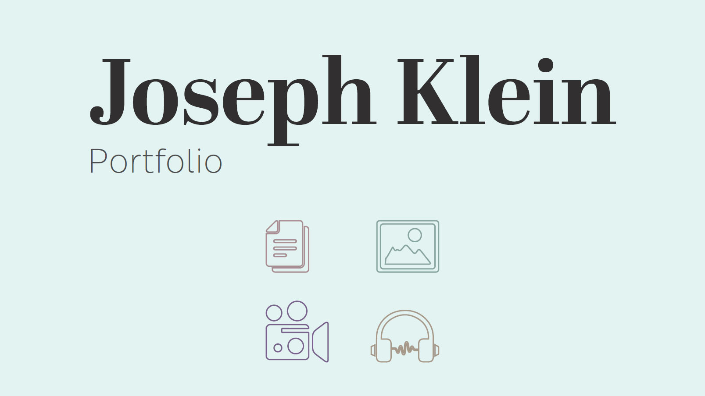

Services Offered
Video Editing
Photo Editing
Graphic Design
A Unique Take on Media
Offering a fresh take on digital media projects, I offer editing styles and project ideas most digital media specialists would shy away from due to the increased workload that would be required on their part, and I offer that at a lower cost than most other digital media specialists. See the services offered above to view my pay rates as proof of that. Be sure to also head to my contact page to see how to contact me and, and my portfolio to see my commisioned work. My works-in-progress page also includes personal projects of mine that I'm working on, so you can get a feel for what I plan to bring to the table.
About Joseph Klein
As a freelance video editor and digital media specialist, my journey into the digital media market began in 2022, when I wrote my first screenplay, Behind the Scenes, which resulted in the beginning of numerous digital media projects ranging from page designs, such as book covers and menu layouts, to other more complex video productions that would become commercial successes on YouTube.